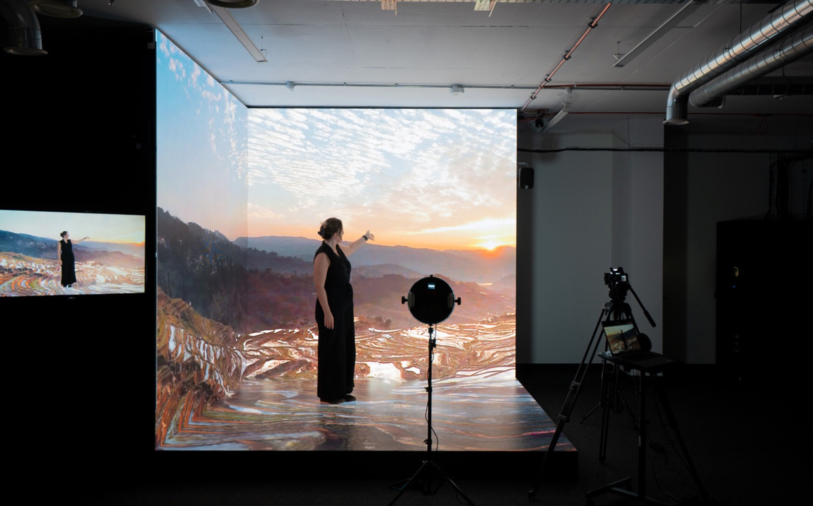

By Cassie
What does a New Zealand LED display importer need to know? Importing LED displays into New Zealand means lodging an entry through the Trade Single Window, holding a supplier declaration of conformity for declared articles under the RCM framework, and specifying cabinets that cope with a damp temperate maritime climate and very high ultraviolet levels. This 2026 guide explains each step.
New Zealand is a compact but well-funded market, and demand for LED displays comes from retail, banking, transport, sports venues, education, and events. Almost every professional screen is imported from China, and the market is served by AV integrators and electrical wholesalers who buy in project quantities.
A New Zealand LED display importer who lodges a clean entry and holds the electrical safety paperwork before dispatch clears cargo without difficulty. The two points that most often delay a project are the supplier declaration for declared articles and the specification for a damp, windy, high-UV coastal environment.
New Zealand Customs handles import entries, and most commercial cargo is cleared through the Trade Single Window, the joint border system it shares with the Ministry for Primary Industries. The importer needs a New Zealand Business Number and must be registered with Customs before an entry can be lodged, and a licensed customs broker usually files on the importer's behalf.
Containerised displays arrive mainly through the Ports of Auckland and the Port of Tauranga, with Lyttelton and Wellington serving the South Island and the lower North Island. Biosecurity rules apply to wood packaging, so confirm the crates and pallets meet the ISPM 15 treatment standard before dispatch.
| Step | What Is Required | Who Handles It |
|---|---|---|
| Importer registration | New Zealand Business Number and Customs registration | Importer |
| Broker appointment | Licensed customs broker to lodge the entry | Importer |
| Import declaration | Entry filed through the Trade Single Window | Broker or agent |
| Duty and GST | Assessed on the customs value | Importer |
| Conformity evidence | Where the requirement applies | Supplier, verified by importer |
| Inland transport | Delivery from the port to site | Importer or broker |
Check the consignee named on the bill of lading against the importer of record. A mismatch between the transport document and the customs entry is a common cause of delay at Auckland and Tauranga, and correcting it takes longer than checking it before dispatch.
New Zealand shares the electrical and electromagnetic compliance framework used in Australia, based on the RCM marking. Electrical safety is regulated under the Electricity (Safety) Regulations, which are administered by WorkSafe New Zealand, and electromagnetic compatibility is regulated by Radio Spectrum Management within the Ministry of Business, Innovation and Employment.
LED displays and their power supplies are usually treated as declared articles, which means the supplier must hold a supplier declaration of conformity supported by test evidence to the relevant AS/NZS standards, and enter that declaration on the national register before the goods are supplied. Goods outside the declared list must still be safe, so a test report is worth holding even where a declaration is not mandatory.
| Requirement | What It Covers | Evidence to Hold |
|---|---|---|
| Supplier declaration of conformity | Electrical safety for declared articles | Declaration naming the offered model |
| Registration on the national register | Public record of the declaration | Entry completed before supply |
| Safety test report | Electrical safety | Report to the relevant AS/NZS standard |
| EMC evidence | Electromagnetic compatibility | EMC test report for the model |
| Technical file | Drawings and specifications | Complete file held by the importer |
| Packaging treatment | Biosecurity for wood packaging | ISPM 15 treatment evidence |
Confirm the declaration names the exact model being imported and is entered on the register before the screens are supplied. A declaration covering a similar screen in the same range does not cover a different model, and the gap is usually found after the goods have landed.
New Zealand applies a simple tariff structure and many electronic goods enter free of duty, but goods and services tax applies to almost every import at 15 percent. Duty, where it applies, is calculated on the customs value, and GST is charged on the duty-paid value plus freight and insurance.
Model the landed cost before comparing suppliers, because the charges between the factory gate and the site are where budgets are lost.
| Cost Element | Basis | Notes |
|---|---|---|
| Customs duty | Commodity code and customs value | Confirm the rate for the code |
| Value added tax | Value plus duty plus freight and insurance | Standard rate applies |
| Conformity assessment | Per shipment or per product | Budget for the processing time |
| Broker fee | Per declaration | Varies by broker and volume |
| Port and storage | Per day after the free period | Mounts quickly if documents are late |
| Inland transport | By distance and route | Confirm delivery to site |
GST is recoverable for a registered business, so the effect is on cash flow rather than on final cost. Duty and the brokerage fee are not recoverable and belong in the cost calculation from the beginning.
Agree the Incoterm deliberately. Under FOB the buyer arranges the freight and controls the entry, while under CIF or DDP the supplier arranges more. The choice changes the duty base and determines who holds the customs records.
Most importers work through a licensed customs broker who lodges the declaration and handles the border formalities. Choose a broker who clears electronic goods rather than general cargo, because the classification of a display, its power supplies, its control hardware, and its mounting steel differs and each line carries its own treatment.
Give the broker the complete document pack before dispatch. A shipment that reaches Auckland or Tauranga with incomplete paperwork is held while the gap is filled, and storage charges accumulate for every day the container remains in the terminal.
Confirm in advance who pays the terminal charges and the inspection fee, and agree the arrangement in the purchase contract rather than at the port. A written allocation of costs prevents a dispute while the container is accruing charges.
New Zealand has a temperate maritime climate with mild winters, high rainfall, strong winds, and very high ultraviolet levels. Coastal sites face salt air, and the whole country sits in a seismically active zone, so mounting design matters as much as the screen itself.
For New sites, humidity and salt-laden coastal air make sealed cabinets the deciding factor: the COB EF outdoor series (IP65, 3000 nits) and the COB ZH touring series (sealed, 3400–4000 nits) are built for exactly this duty.
| Condition | Risk | Specification Response |
|---|---|---|
| Damp maritime air | Condensation inside cabinets | Sealed cabinets and ventilation design |
| High rainfall and wind-driven rain | Water ingress | High ingress rating and sealed cable entries |
| Coastal salt air | Corrosion of connectors and hardware | Corrosion-protected hardware and stainless fixings |
| Very high UV levels | Fading and cable ageing | UV-stable materials and coatings |
| Strong wind loading | Structural stress on mounts | Mounting designed to the local wind zone |
| Seismic activity | Cabinet and mount failure | Engineering review of the fixing design |
Where the site is on the coast or in an exposed location, add corrosion protection and confirm the ingress rating. Salt air and constant damp age connectors and hardware faster than heat alone, and the replacement cost sits with the importer.
Most LED display cargo reaches New Zealand by sea from Shenzhen or Hong Kong, with transshipment through a hub such as Singapore, Port Klang, or Sydney. Air freight is reserved for urgent spare parts and sample units.
| Stage | Typical Duration | What Can Delay It |
|---|---|---|
| Production | 15 to 25 working days | Component availability and queue |
| Inland to port and export | 3 to 5 days | Booking availability |
| Conformity documentation | 3 to 7 days | Test report and declaration queries |
| Sea freight | Varies by routing | Transshipment and carrier schedule |
| Import clearance | 3 to 7 days | Documentation queries and inspection |
| Inland delivery | 1 to 6 days | Distance and road conditions |
| Total | Approximately 6 to 9 weeks | Add a substantial buffer |
Build a buffer of at least two weeks beyond the quoted transit time. New Zealand is a long way from any manufacturing base, so a replacement part takes weeks to arrive and a screen tied to an opening date has no room to absorb delay.
Ask every candidate the same questions and record the answers. For New Zealand projects the declaration paperwork, the corrosion specification, and the packing quality matter as much as the price.
| Question | What a Strong Answer Looks Like | Warning Sign |
|---|---|---|
| Conformity support | Evidence supplied for the offered model | Documents promised after dispatch |
| Climate rating | Stated ingress protection and treatment | Not specified |
| Power supply | Named brand and wide input range | Brand only, no part number |
| Packaging standard | Crating method described for sea freight | Not addressed |
| Spare parts availability | Stated period in writing | No commitment given |
| Service response | Stated time by fault severity | Answer avoided |
Confirm the components in writing and require written approval for any substitution, and confirm the wood packaging meets the ISPM 15 treatment standard before the goods leave the factory.
Each mistake is inexpensive to avoid during planning and costly after the goods land. A New Zealand LED display importer who completes the declaration and specifies for the coastal climate avoids most of them.
Asia Vision Technology manufactures LED displays in Shenzhen and supplies importers, integrators, and contractors across Australia and New Zealand. The factory prepares the test documentation that supports a supplier declaration of conformity, packs for long sea routes, and holds spare parts for the stated warranty period.
For New Zealand projects the company supplies rental cabinets for events, fine pitch screens for retail and corporate work, and outdoor displays rated for wind-driven rain and high UV. OEM and ODM production is available for distributors building their own range.

Related reading: Uruguay LED Display Importer Guide 2026: Customs and Import